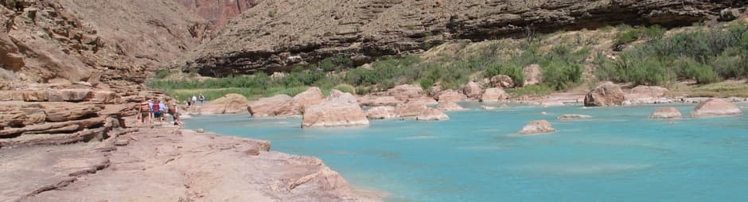

History
Whitewater rafting has an interesting history that reflects both the evolution of outdoor recreation and the development of rafting technology. The first recorded descent of a river using a raft was in the late 19th century, and since then it has evolved into a popular adventure sport.

Adventure Awaits You